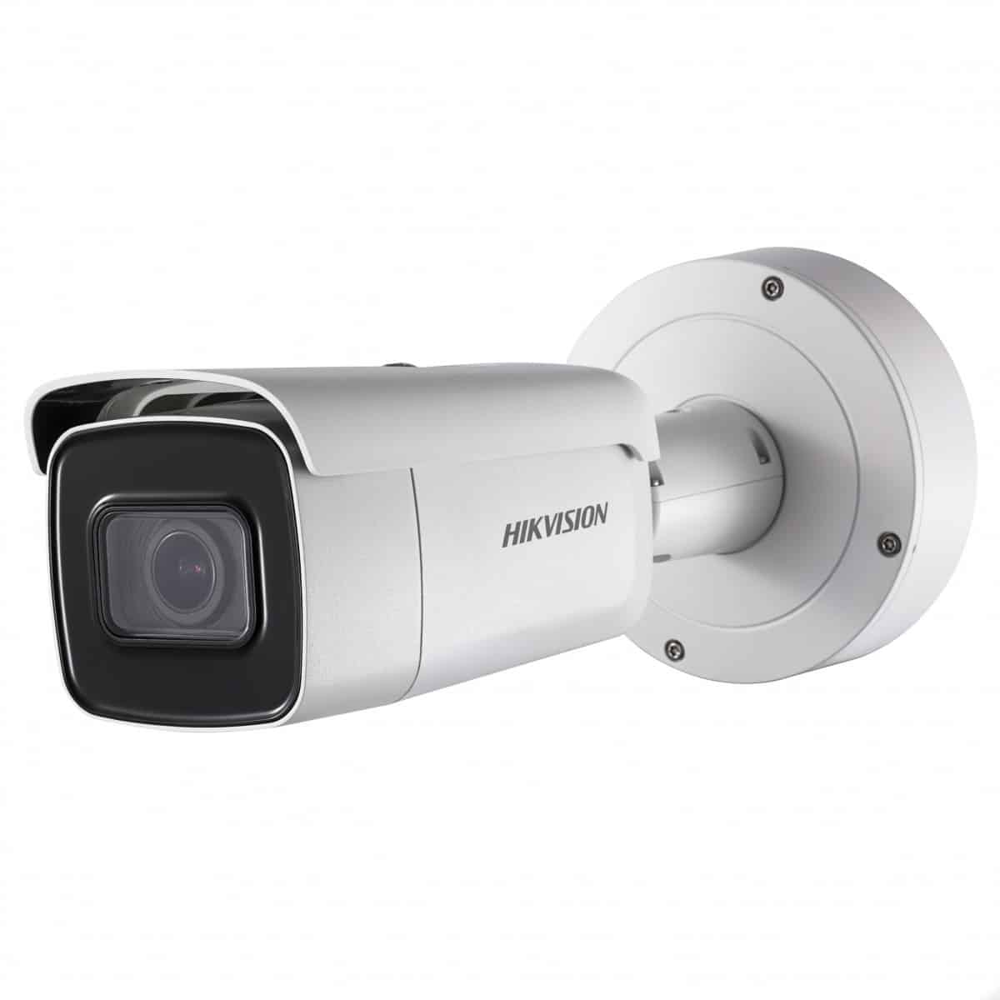

Las cámaras de fotodetección son dispositivos avanzados diseñados para monitorear y hacer cumplir las normas de tráfico en áreas urbanas y carreteras. Estas cámaras desempeñan un papel crucial en la mejora de la seguridad vial al detectar y registrar violaciones de tráfico, como excesos de velocidad, semáforos en rojo y comportamientos peligrosos.
Una de las funciones más comunes de las cámaras de fotodetección es la captura automática de imágenes o videos de vehículos que violan las reglas de tráfico. Estos registros pueden utilizarse como pruebas legales en la aplicación de sanciones y multas. Además, las cámaras de fotodetección pueden ser implementadas en zonas de alto tráfico o en áreas donde se requiere una mayor vigilancia, contribuyendo así a reducir accidentes y mejorar la seguridad de los peatones y conductores.

Una de las funciones más comunes de las cámaras de fotodetección es la captura automática de imágenes o videos de vehículos que violan las reglas de tráfico. Estos registros pueden utilizarse como pruebas legales en la aplicación de sanciones y multas. Además, las cámaras de fotodetección pueden ser implementadas en zonas de alto tráfico o en áreas donde se requiere una mayor vigilancia, contribuyendo así a reducir accidentes y mejorar la seguridad de los peatones y conductores.
© 2023 - Steven / Felipe Gomez

3138752665

pipegatas@gmail.com